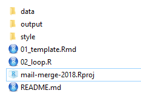
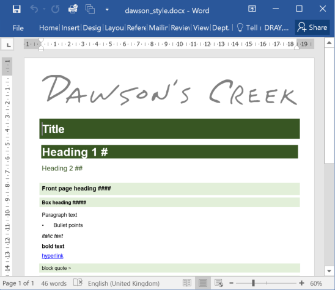
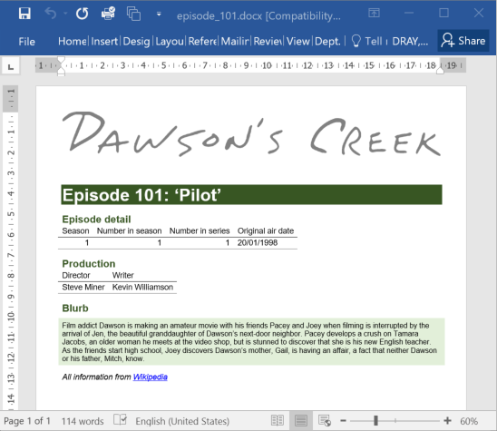
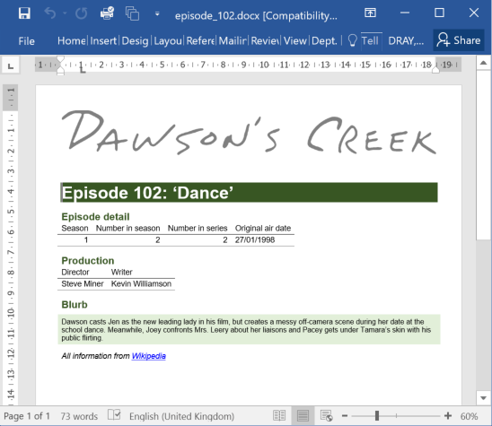

---
output:
word_document:
reference_docx: style/dawson_style.docx
---tl;dr
You have customer details. You want to send each person a personalised letter from a template. You want to mail merge, basically.1
This post shows how you can use R to iteratively produce separate Microsoft Word reports from a common template, each one with slightly different data. Here I use R Markdown and the {knitr} package to render a separate report about each episode of Dawson’s Creek (a classic use case!).
Merge those mails
I remember learning to mail merge in computer class at the turn of the century; autocompleting a Word template letter with details for imaginary customers from some made-up Access database.
I no longer need to invoice ‘Mr Sonic The-Hedgehog’ for ordering ‘25 chili dogs’, but the general approach of generating the same template multiple times with different information is still pertinent. The difference now is that I don’t want to use proprietary software to do it and I want the process to be more reproducible.
I’ve helped a few colleagues with this recently so they could avoid hours of copy-pasting. R is a natural choice for automating this kind of task and for maximising reproducibility.
Who will she choose?
To keep to the turn-of-the-millennium theme, this post explains how to autogenerate reports that contain data for each episode of the first season of the hit late-90s-early-2000s-weirdly-articulate-teen-angst-love-triangle masterpiece that is Dawson’s Creek. Data via Wikipedia.
I’ve created an accompanying GitHub repository where you can download or clone a whole R Project that replicates the approach used in this post.
Approach
A basic overview of the process is that you:
- write a template document using R Markdown, with snippets of R code that will pull in the data for each element you’re iterating over (e.g. Dawson’s Creek episodes)
- make reference to a Word document that contains the style information for your output (i.e. fonts, colours, etc)
- loop over each element (e.g. each episode), supplying data to the template and rendering (‘knitting’) a separate output file for each one
[Update: this approach is quite basic. You may want to read a more recent post on this blog that uses parameterised R Markdown reports and iteration with the {purrr} package, which may suit you better.]
Set up
I recommend creating an RStudio Project with three files important to this task:
- Your document template prepared in R Markdown (file type
.Rmd) - Your style-reference document (
.docx) that we’ll put in astyle/subfolder - A script (
.R) file for reading your data and looping through each element
Aside from your .Rproj file, your folder should also contain:
- a subfolder to hold the output files (e.g.
output/) - any additional subfolders you need for input files (e.g.
data/andimages/) - an optional
README.mdfile to explain the purpose of your work

Below is a more detailed explanation using the Dawson’s Creek example. Click to jump to each section:
1. The template
R Markdown
Your report template should be an R Markdown file. In short, R Markdown files allow you to write plain text formatted with special symbols and insert R code inline or in ‘chunks’. You can find out more about R Markdown from the RStudio website. I’ve also written a short guide to writing R Markdown documents and created a small set of slides, both with beginners in mind.
You can see the full R Markdown file for this demo in the source code on GitHub.
Specify Word output
The template itself should start with a YAML header section that states (i) the output type, which is word_document in this example2, and (ii) a path to the Word document that contains the style information (i.e. style/dawson_style.docx in this example). The style document is explained in the next section.
Here’s what the basic YAML header looks like:
Reference the data
We’ll be feeding data into the template via an object called episode. This object is a data frame that contains the variables that we want to put into our template, with one row per episode (more on this in the section below about iterating below).
When it comes to iterating over the data to produce each output file, we’ll be subsetting a row at a time so we only pass one episode’s information to the template.
This means the R code in our R Markdown file should refer to the episode object. For example, here’s some inline code that will be rendered into the production code and title (see this in the source repo on GitHub):
`r paste0(episode$production_code, ": '", episode$title, "'")`And here’s an example R Markdown chunk that will get a table containing information about the episodes (see this in the source code):
episode %>%
dplyr::select( # choose these columns for display
Season = season,
`Number in season` = number_in_season,
`Number in series` = number_in_series,
`Original air date` = original_air_date
) %>%
knitr::kable() # print to output table2. The style
The default output when rendering R Markdown to Word is a bit boring. Instead, you can create a separate dummy Word document that contains modified styles to suit your theme.
You can read more about creating a style document in Richard Layton’s ‘happy collaboration with Rmd to docx’ on the R Markdown site. Basically you create a dummy document in which you’ve set the formatting for each style element (title, third-level header, paragraph text, etc), store it in your working repository and refer to it from the YAML of your R Markdown report (as mentioned in the section above).

You can download the example style file used in this demo from the GitHub repo.
3. Iterate
So we have the template (.Rmd) and style (.docx) files in place. Now we need an R script (.R) to orchestrate the iteration of our outputs.
This script (i) reads the data and (ii) executes a loop that applies episode data to the template, saving to a specified subfolder with a unique file name. You’ll get one document for each unique element; in this demo we’ll get 13 because there are 13 rows (episodes) in our data set.
You can see the script file for this demo in the source code on GitHub.
After reading in the data with something like data <- readr::read_csv(file = "data/dawsons-creek-season-1.csv") you can write a loop that looks something like this:
for (i in data$production_code){ # for each unique episode...
# Isolate that episode from the dataset
episode <- data[data$production_code == i, ]
# The one-row dataframe object 'episode' we just created will be used as the
# source for filling the details in on the template file
# Now render ('knit') the R Markdown file to Word format, name it and save it
rmarkdown::render(
input = "01_template.Rmd", # path to the template
output_file = paste0("episode_", i, ".docx"), # name the output
output_dir = "output" # folder in which to put the output file
)
}So this code:
- loops through episodes given unique values in the
production_codecolumn - subsets the
dataobject (a data frame of all episodes) to isolate the production code for each episode in turn - renders the template document after filling it with the
episodedata - gives the file a name that incorporates the production code
- saves this file to the
output/subfolder in our project directory
Execute
Run the R script and the files will be rendered in turn according to the formatting in the style document, and added one by one to the output/ folder. It’s fun to open this folder and watch them pop into existence.


Congratulations! You now have a separate file that contains the information for each of the episodes in season 1 of Dawson’s Creek! Make sure to share with your friends (assuming you’re not in an awkward love triangle).
Environment
Session info
I don’t wanna wait for this post to be oooover…
Last rendered: 2023-08-09 00:06:56 BSTR version 4.3.1 (2023-06-16)
Platform: aarch64-apple-darwin20 (64-bit)
Running under: macOS Ventura 13.2.1
Matrix products: default
BLAS: /Library/Frameworks/R.framework/Versions/4.3-arm64/Resources/lib/libRblas.0.dylib
LAPACK: /Library/Frameworks/R.framework/Versions/4.3-arm64/Resources/lib/libRlapack.dylib; LAPACK version 3.11.0
locale:
[1] en_US.UTF-8/en_US.UTF-8/en_US.UTF-8/C/en_US.UTF-8/en_US.UTF-8
time zone: Europe/London
tzcode source: internal
attached base packages:
[1] stats graphics grDevices utils datasets methods base
loaded via a namespace (and not attached):
[1] htmlwidgets_1.6.2 compiler_4.3.1 fastmap_1.1.1 cli_3.6.1
[5] tools_4.3.1 htmltools_0.5.5 rstudioapi_0.15.0 yaml_2.3.7
[9] rmarkdown_2.23 knitr_1.43.1 jsonlite_1.8.7 xfun_0.39
[13] digest_0.6.33 rlang_1.1.1 evaluate_0.21 Reuse
CC BY-NC-SA 4.0